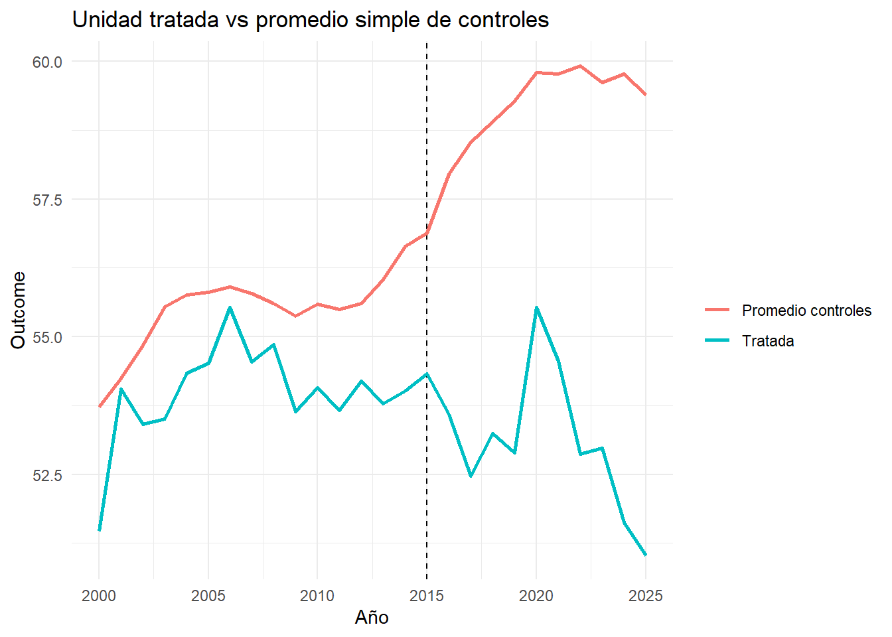
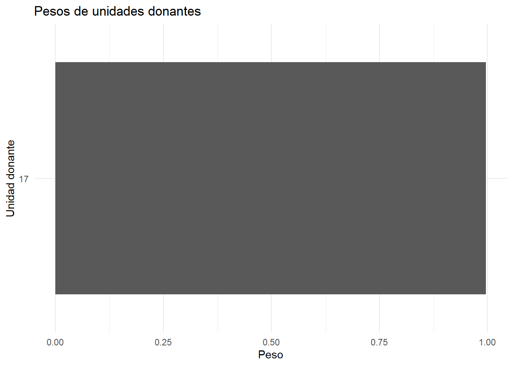
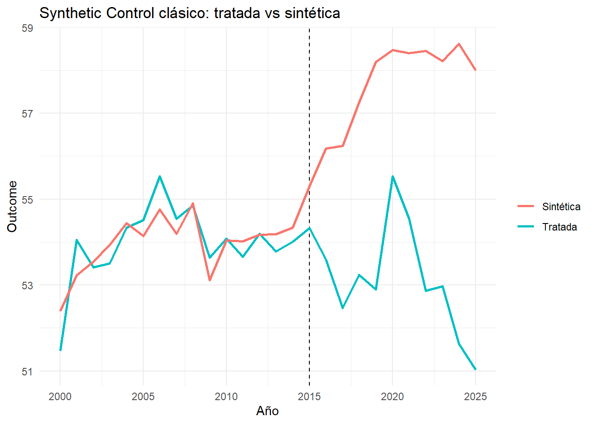
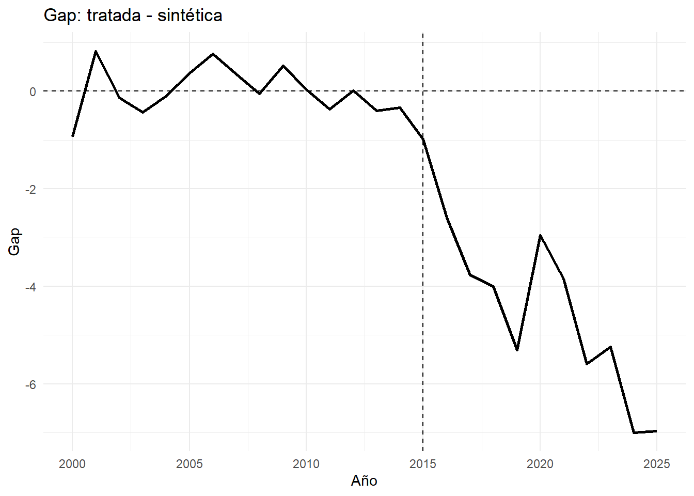
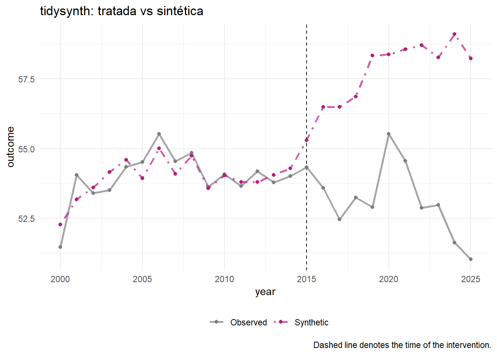
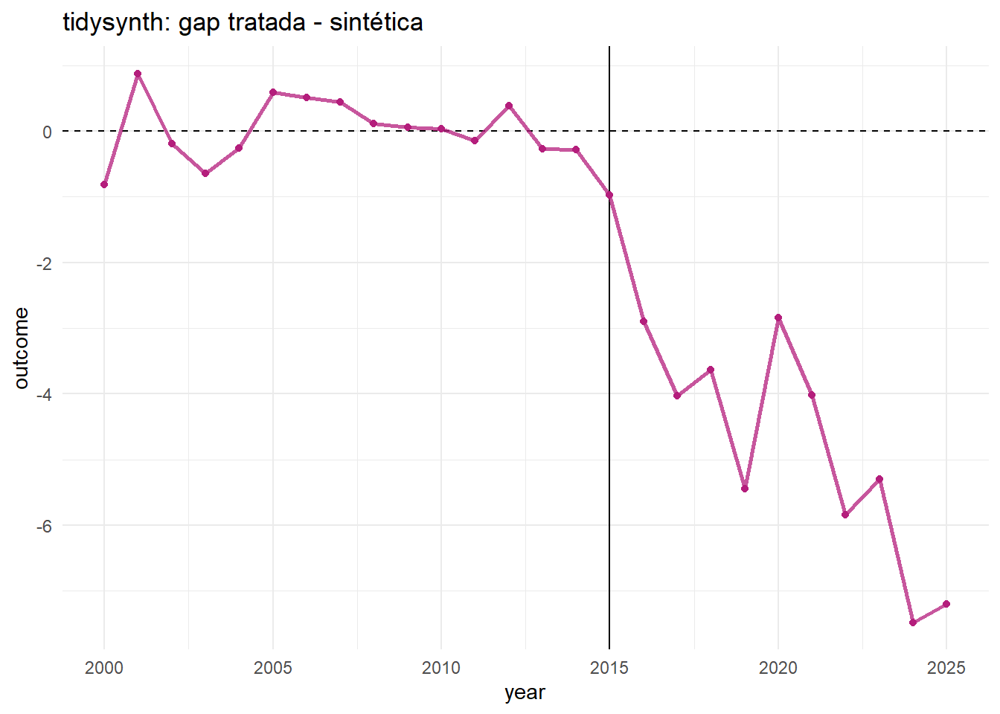
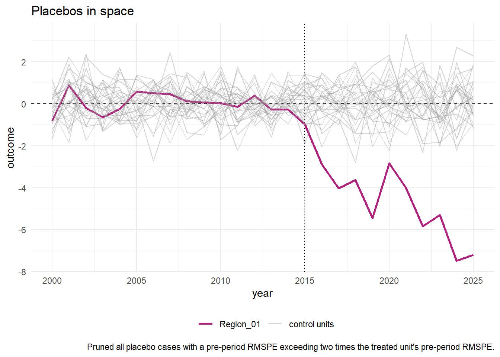
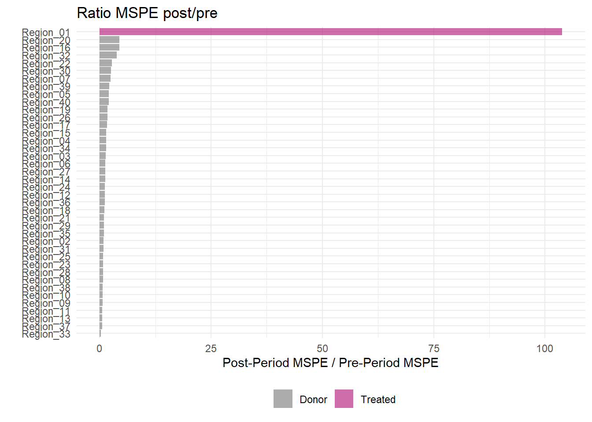
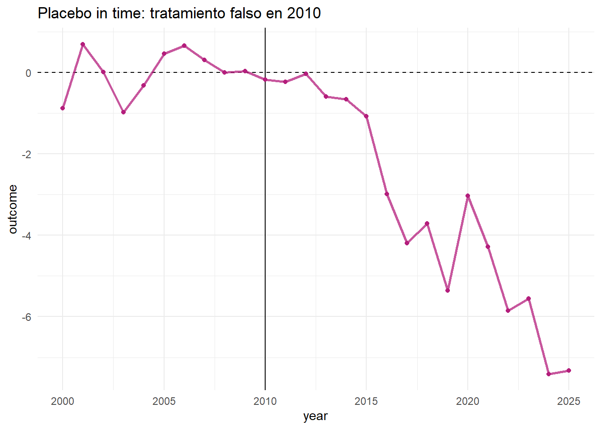

# install.packages(c(
# "tidyverse", "janitor", "Synth", "tidysynth",
# "fixest", "modelsummary", "broom", "scales"
# ))
library(tidyverse)
library(janitor)
library(Synth)
library(tidysynth)
library(fixest)
library(modelsummary)
library(broom)
library(scales)
theme_set(theme_minimal())Manual práctico de Synthetic Control y Synthetic Control DiD en R
Versión estable para examen: Synth, tidysynth y código manual sin paquetes no disponibles en CRAN
1 1. Objetivo del manual
Este manual explica cómo hacer Synthetic Control y una versión práctica de Synthetic Control DiD en R usando únicamente paquetes razonablemente estables e instalables desde CRAN.
La versión anterior usaba synthdid, pero ese paquete puede no estar disponible con algunas versiones de R mediante install.packages(). Para un examen, conviene evitar dependencias que puedan fallar. Por tanto, este manual usa principalmente:
Synth: implementación clásica del Synthetic Control.tidysynth: implementación tidy basada en Synthetic Control clásico.fixest: para estimaciones DiD de comparación.modelsummary: para tablas.
Opcionalmente se menciona gsynth, que está en CRAN, pero el manual principal no depende de él.
A diferencia de un event study estimado por regresión, en Synthetic Control clásico los gaps no suelen representarse con intervalos de confianza punto a punto. La inferencia se basa principalmente en placebos: se reestima el método tratando falsamente a cada unidad donante y se compara si el gap de la unidad realmente tratada es extremo respecto a la distribución de gaps placebo. Una métrica habitual es el ratio RMSPE post/pre. Si la unidad tratada presenta un ratio mucho mayor que las unidades placebo, hay evidencia de que el efecto observado es inusual bajo la hipótesis de no efecto.
| Evidencia | Interpretación |
|---|---|
| Buen pre-fit + gap post grande + ratio RMSPE tratado máximo | Evidencia fuerte |
| Buen pre-fit + gap post moderado + ratio tratado alto | Evidencia razonable |
| Mal pre-fit + gap post grande | Cuidado: contrafactual débil |
| Buen pre-fit + muchos placebos similares | Evidencia débil |
| Resultado cambia mucho en leave-one-out | Resultado frágil |
2 2. Paquetes
3 3. Qué es Synthetic Control
Un Synthetic Control construye un contrafactual para una unidad tratada usando una combinación ponderada de unidades no tratadas.
Ejemplo:
Una región adopta una política en 2015. Queremos saber qué habría pasado en esa región si no hubiera adoptado la política. Para ello construimos una región sintética como combinación ponderada de otras regiones no tratadas.
Formalmente, para la unidad tratada 1:
\[ Y_{1t}(0) \approx \sum_{j=2}^{J+1} w_j Y_{jt} \]
donde:
- \(Y_{1t}(0)\) es el outcome potencial sin tratamiento de la unidad tratada;
- \(Y_{jt}\) son outcomes de unidades donantes;
- \(w_j\) son pesos;
- \(w_j \geq 0\);
- \(\sum_j w_j = 1\).
El efecto estimado en cada periodo postratamiento es:
\[ \hat{\tau}_t = Y_{1t} - \sum_j \hat{w}_j Y_{jt} \]
Es decir:
efecto = outcome observado de la tratada - outcome de la unidad sintética.
4 4. Intuición
Synthetic Control no compara la unidad tratada con el promedio simple de controles. Compara la tratada con una combinación ponderada de controles elegida para parecerse a ella antes del tratamiento.
La lógica es:
- Antes del tratamiento, la unidad tratada y la sintética deberían moverse de forma muy parecida.
- Después del tratamiento, si se separan, esa brecha puede interpretarse como efecto del tratamiento.
- Esta interpretación es creíble si no hay otros shocks diferenciales y si el ajuste pretratamiento es bueno.
5 5. Qué efecto causal identifica
En SC clásico con una unidad tratada, normalmente queremos:
\[ \tau_t = Y_{1t}(1) - Y_{1t}(0) \]
para cada periodo postratamiento.
Si promediamos en el post:
\[ ATT_{post} = \frac{1}{T_1} \sum_{t > T_0} \tau_t \]
Este efecto es local al caso estudiado:
No es necesariamente el efecto medio de la política en todas las regiones, sino el efecto para la unidad tratada o grupo tratado analizado.
6 6. Diferencia con DiD
| Método | Contrafactual | Supuesto central |
|---|---|---|
| DiD | Media de controles | Tendencias paralelas |
| Synthetic Control | Combinación ponderada de controles | Buen ajuste pretratamiento |
| Synthetic Control DiD práctico | Diferencia pre/post entre tratada y sintética | Buen ajuste y/o diferencias de nivel estables |
DiD pregunta:
¿Habría evolucionado la tratada como la media de controles?
Synthetic Control pregunta:
¿Puedo construir una combinación de controles que reproduzca bien la trayectoria pretratamiento de la tratada?
Synthetic Control DiD práctico pregunta:
Una vez construida la unidad sintética, ¿cuánto cambia la brecha tratada-sintética tras el tratamiento respecto a antes?
7 7. Cuándo usar Synthetic Control clásico
Usaría SC clásico si:
- tienes una unidad tratada clara;
- hay un momento de tratamiento bien definido;
- tienes varias unidades donantes nunca tratadas;
- hay bastantes periodos pretratamiento;
- la unidad sintética reproduce bien a la tratada antes del tratamiento;
- quieres un estudio de caso transparente.
Ejemplos:
- una región adopta una política;
- un país aplica una reforma;
- una ciudad introduce una norma;
- una empresa recibe una intervención regulatoria.
8 8. Cuándo usar Synthetic Control DiD práctico
En este manual, llamamos Synthetic Control DiD práctico a una estimación en dos pasos:
- Construir una unidad sintética con pesos de Synthetic Control.
- Estimar el efecto como una diferencia-en-diferencias entre la tratada y la sintética:
\[ \hat{\tau}_{SC-DiD} = \left( \bar{Y}_{1,post} - \bar{Y}_{1,pre} \right) - \left( \bar{Y}_{SC,post} - \bar{Y}_{SC,pre} \right) \]
donde:
\[ \bar{Y}_{SC,t} = \sum_j \hat{w}_j Y_{jt} \]
Esto no es exactamente el estimador formal de Arkhangelsky et al. implementado por el paquete synthdid, porque aquí no estimamos pesos temporales óptimos. Pero es una alternativa práctica, estable y fácil de explicar en un examen.
Usaría este enfoque si:
- el SC clásico tiene una pequeña diferencia de nivel pretratamiento;
- quiero resumir el efecto post en un único número;
- quiero una comparación tipo DiD después de construir un control ponderado;
- no quiero depender de paquetes no disponibles en CRAN.
9 9. Datos sintéticos
Creamos un panel con 40 regiones entre 2000 y 2025. Una región recibe tratamiento en 2015. El tratamiento reduce el outcome a partir de 2015.
set.seed(123)
n_units <- 40
years <- 2000:2025
treat_year <- 2015
treated_unit <- "Region_01"
units <- paste0("Region_", str_pad(1:n_units, 2, pad = "0"))
unit_data <- tibble(
unit = units,
unit_id = 1:n_units,
income = rnorm(n_units, 30000, 5000),
population = round(exp(rnorm(n_units, log(1e6), 0.7))),
urban_share = runif(n_units, 0.3, 0.95),
unit_fe = rnorm(n_units, 0, 2),
factor_loading = rnorm(n_units, 1, 0.3)
)
time_data <- tibble(
year = years,
time_fe = 0.25 * (year - min(year)),
common_factor = sin((year - min(year)) / 2.5)
)
df <- expand_grid(
unit = units,
year = years
) |>
left_join(unit_data, by = "unit") |>
left_join(time_data, by = "year") |>
mutate(
is_treated_unit = unit == treated_unit,
post = as.integer(year >= treat_year),
treated = as.integer(is_treated_unit & post == 1),
treatment_effect = if_else(treated == 1, -3 - 0.35 * (year - treat_year), 0),
outcome = 50 +
unit_fe +
time_fe +
factor_loading * common_factor +
0.00008 * income +
2.5 * urban_share +
treatment_effect +
rnorm(n(), 0, 0.8)
)
glimpse(df)Rows: 1,040
Columns: 15
$ unit <chr> "Region_01", "Region_01", "Region_01", "Region_01", "…
$ year <int> 2000, 2001, 2002, 2003, 2004, 2005, 2006, 2007, 2008,…
$ unit_id <int> 1, 1, 1, 1, 1, 1, 1, 1, 1, 1, 1, 1, 1, 1, 1, 1, 1, 1,…
$ income <dbl> 27197.62, 27197.62, 27197.62, 27197.62, 27197.62, 271…
$ population <dbl> 614900, 614900, 614900, 614900, 614900, 614900, 61490…
$ urban_share <dbl> 0.6264947, 0.6264947, 0.6264947, 0.6264947, 0.6264947…
$ unit_fe <dbl> -1.420813, -1.420813, -1.420813, -1.420813, -1.420813…
$ factor_loading <dbl> 1.210535, 1.210535, 1.210535, 1.210535, 1.210535, 1.2…
$ time_fe <dbl> 0.00, 0.25, 0.50, 0.75, 1.00, 1.25, 1.50, 1.75, 2.00,…
$ common_factor <dbl> 0.00000000, 0.38941834, 0.71735609, 0.93203909, 0.999…
$ is_treated_unit <lgl> TRUE, TRUE, TRUE, TRUE, TRUE, TRUE, TRUE, TRUE, TRUE,…
$ post <int> 0, 0, 0, 0, 0, 0, 0, 0, 0, 0, 0, 0, 0, 0, 0, 1, 1, 1,…
$ treated <int> 0, 0, 0, 0, 0, 0, 0, 0, 0, 0, 0, 0, 0, 0, 0, 1, 1, 1,…
$ treatment_effect <dbl> 0.00, 0.00, 0.00, 0.00, 0.00, 0.00, 0.00, 0.00, 0.00,…
$ outcome <dbl> 51.47057, 54.05319, 53.40990, 53.50709, 54.34223, 54.…10 10. Primer gráfico: tratada vs controles brutos
df |>
mutate(group = if_else(unit == treated_unit, "Tratada", "Promedio controles")) |>
group_by(group, year) |>
summarise(outcome = mean(outcome), .groups = "drop") |>
ggplot(aes(year, outcome, color = group)) +
geom_vline(xintercept = treat_year, linetype = "dashed") +
geom_line(linewidth = 1) +
labs(
title = "Unidad tratada vs promedio simple de controles",
x = "Año",
y = "Outcome",
color = ""
)
Este gráfico muestra una comparación descriptiva. Todavía no es Synthetic Control porque los controles pesan todos igual.
11 11. Checklist antes de estimar
Antes de hacer Synthetic Control, revisa:
- ¿Cuál es la unidad tratada?
- ¿Cuál es el año de tratamiento?
- ¿Qué unidades pueden ser donantes?
- ¿Alguna unidad donante está contaminada o tratada indirectamente?
- ¿Hay suficientes años pretratamiento?
- ¿Hay anticipación antes del tratamiento?
- ¿Hay shocks coincidentes en la unidad tratada?
- ¿El outcome es comparable entre unidades?
- ¿El pre-fit será evaluable visualmente?
- ¿Qué covariables pretratamiento usarás como predictores?
12 12. Synthetic Control clásico con Synth
Synth sigue un flujo de tres pasos:
dataprep(): preparar matrices.synth(): estimar pesos.synth.tab(), gráficos y gaps: interpretar.
12.1 12.1. Preparar identificadores
Synth requiere un identificador numérico de unidad.
df_synth <- df |>
mutate(
unit_num = as.integer(factor(unit)),
unit_name = unit
)
treated_id <- df_synth |>
filter(unit == treated_unit) |>
distinct(unit_num) |>
pull(unit_num)
control_ids <- df_synth |>
filter(unit != treated_unit) |>
distinct(unit_num) |>
pull(unit_num)
treated_id[1] 1head(control_ids)[1] 2 3 4 5 6 712.2 12.2. dataprep()
dataprep_out <- dataprep(
foo = as.data.frame(df_synth),
# Predictores estructurales pretratamiento.
predictors = c("income", "population", "urban_share"),
# Cómo resumir los predictores en el periodo pre.
predictors.op = "mean",
# Años usados para calcular predictores.
time.predictors.prior = 2000:2014,
# Predictores especiales: lags o medias del outcome.
special.predictors = list(
list("outcome", 2005, "mean"),
list("outcome", 2010, "mean"),
list("outcome", 2012:2014, "mean")
),
# Outcome.
dependent = "outcome",
# Identificadores.
unit.variable = "unit_num",
unit.names.variable = "unit_name",
time.variable = "year",
# Tratada y donantes.
treatment.identifier = treated_id,
controls.identifier = control_ids,
# Ventana pretratamiento usada para optimizar el ajuste.
time.optimize.ssr = 2000:2014,
# Periodos que se mostrarán en gráficos.
time.plot = 2000:2025
)12.3 12.3. synth()
synth_out <- synth(dataprep_out)synth() elige pesos de unidades donantes para minimizar la distancia entre la tratada y la sintética en el periodo pretratamiento.
13 13. Interpretación de pesos
13.1 13.1. Pesos de unidades
unit_names <- dataprep_out$tag$unit.names
control_names <- unit_names[unit_names != treated_unit]
weights_synth <- tibble(
unit = control_names,
weight = as.numeric(synth_out$solution.w)
) |>
arrange(desc(weight))
weights_synth |> filter(weight > 0.001)# A tibble: 31 × 2
unit weight
<int> <dbl>
1 17 0.426
2 17 0.194
3 17 0.176
4 17 0.130
5 17 0.00709
6 17 0.00672
7 17 0.00617
8 17 0.00393
9 17 0.00367
10 17 0.00350
# ℹ 21 more rowsInterpretación:
- peso alto = unidad donante importante;
- peso cero = unidad no usada;
- pesos concentrados en una sola unidad = resultado potencialmente frágil;
- pesos dispersos = sintético más parecido a un promedio ponderado.
13.2 13.2. Gráfico de pesos
weights_synth |>
filter(weight > 0.001) |>
ggplot(aes(x = reorder(unit, weight), y = weight)) +
geom_col() +
coord_flip() +
labs(
title = "Pesos de unidades donantes",
x = "Unidad donante",
y = "Peso"
)
Preocupante, todo el peso en una unidad de control solo
13.3 13.3. Pesos de predictores
predictor_weights <- tibble(
predictor = rownames(synth_out$solution.v),
weight = as.numeric(synth_out$solution.v)
) |>
arrange(desc(weight))
predictor_weights# A tibble: 6 × 2
predictor weight
<chr> <dbl>
1 BFGS 0.646
2 BFGS 0.215
3 BFGS 0.0733
4 BFGS 0.0447
5 BFGS 0.0207
6 BFGS 0.000250Los pesos de predictores indican qué variables fueron más importantes para optimizar el ajuste. No son efectos causales.
14 14. Balance de predictores
synth_tables <- synth.tab(
dataprep.res = dataprep_out,
synth.res = synth_out
)
synth_tables$tab.pred Treated Synthetic Sample Mean
income 27197.622 27219.770 30303.565
population 614900.000 620224.810 1265917.923
urban_share 0.626 0.576 0.654
special.outcome.2005 54.514 54.143 55.803
special.outcome.2010 54.077 54.039 55.597
special.outcome.2012.2014 53.995 54.232 56.090Cómo interpretar:
Treated: valor de la unidad tratada.Synthetic: valor de la unidad sintética.Sample Mean: promedio simple de donantes.
Si Synthetic se acerca mucho más a Treated que Sample Mean, el SC está construyendo un buen contrafactual.
15 15. Trayectoria tratada vs sintética
Extraemos la serie sintética manualmente para poder graficar con ggplot2.
y_treated <- dataprep_out$Y1plot
y_synth <- dataprep_out$Y0plot %*% synth_out$solution.w # %*% multiplicación de matrices
sc_series <- tibble(
year = dataprep_out$tag$time.plot,
treated = as.numeric(y_treated),
synthetic = as.numeric(y_synth),
gap = treated - synthetic
)
ggplot(sc_series, aes(x = year)) +
geom_vline(xintercept = treat_year, linetype = "dashed") +
geom_line(aes(y = treated, color = "Tratada"), linewidth = 1) +
geom_line(aes(y = synthetic, color = "Sintética"), linewidth = 1) +
labs(
title = "Synthetic Control clásico: tratada vs sintética",
x = "Año",
y = "Outcome",
color = ""
)
Interpretación:
- antes del tratamiento, las líneas deberían estar cerca;
- después del tratamiento, la separación se interpreta como efecto;
- si la separación ya existía antes, el SC no es creíble.
16 16. Gap plot
ggplot(sc_series, aes(x = year, y = gap)) +
geom_hline(yintercept = 0, linetype = "dashed") +
geom_vline(xintercept = treat_year, linetype = "dashed") +
geom_line(linewidth = 1) +
labs(
title = "Gap: tratada - sintética",
x = "Año",
y = "Gap"
)
El gap postratamiento es el efecto estimado año a año:
\[ \hat{\tau}_t = Y_{tratada,t} - Y_{sintética,t} \]
17 17. ATT promedio postratamiento
att_sc <- sc_series |>
filter(year >= treat_year) |>
summarise(
att_promedio_post = mean(gap),
att_ultimo_anio = gap[year == max(year)]
)
att_sc# A tibble: 1 × 2
att_promedio_post att_ultimo_anio
<dbl> <dbl>
1 -4.38 -6.97Interpretación:
att_promedio_post: efecto medio durante todo el periodo postratamiento.att_ultimo_anio: efecto en el último año observado.
18 18. Métricas de ajuste: RMSPE
El RMSPE mide error cuadrático medio entre tratada y sintética.
\[ RMSPE = \sqrt{ \frac{1}{T} \sum_t (Y_{tratada,t} - Y_{sintética,t})^2 } \]
rmspe_table <- sc_series |>
mutate(periodo = if_else(year < treat_year, "Pre", "Post")) |>
group_by(periodo) |>
summarise(
rmspe = sqrt(mean(gap^2)),
.groups = "drop"
) |>
pivot_wider(names_from = periodo, values_from = rmspe) |>
mutate(ratio_post_pre = Post / Pre)
rmspe_table# A tibble: 1 × 3
Post Pre ratio_post_pre
<dbl> <dbl> <dbl>
1 4.72 0.467 10.1Interpretación:
- RMSPE pre bajo = buen ajuste pretratamiento;
- ratio post/pre alto = la discrepancia aumenta tras el tratamiento;
- si RMSPE pre es alto, el ratio puede ser engañoso.
19 19. Synthetic Control con tidysynth
tidysynth implementa Synthetic Control con sintaxis tidyverse.
19.1 19.1. Estimación
sc_tidy <- df |>
synthetic_control(
outcome = outcome,
unit = unit,
time = year,
i_unit = treated_unit,
i_time = treat_year,
generate_placebos = TRUE
) |>
generate_predictor(
time_window = 2000:2014,
income = mean(income),
population = mean(population),
urban_share = mean(urban_share),
outcome_mean = mean(outcome)
) |>
generate_predictor(
time_window = 2012:2014,
outcome_recent = mean(outcome)
) |>
generate_weights(
optimization_window = 2000:2014,
margin_ipop = 0.02,
sigf_ipop = 7,
bound_ipop = 6
) |>
generate_control()
sc_tidy# A tibble: 80 × 11
.id .placebo .type .outcome .predictors .synthetic_control .unit_weights
<chr> <dbl> <chr> <list> <list> <list> <list>
1 Region_… 0 trea… <tibble> <tibble> <tibble [26 × 3]> <tibble>
2 Region_… 0 cont… <tibble> <tibble> <tibble [26 × 3]> <tibble>
3 Region_… 1 trea… <tibble> <tibble> <tibble [26 × 3]> <tibble>
4 Region_… 1 cont… <tibble> <tibble> <tibble [26 × 3]> <tibble>
5 Region_… 1 trea… <tibble> <tibble> <tibble [26 × 3]> <tibble>
6 Region_… 1 cont… <tibble> <tibble> <tibble [26 × 3]> <tibble>
7 Region_… 1 trea… <tibble> <tibble> <tibble [26 × 3]> <tibble>
8 Region_… 1 cont… <tibble> <tibble> <tibble [26 × 3]> <tibble>
9 Region_… 1 trea… <tibble> <tibble> <tibble [26 × 3]> <tibble>
10 Region_… 1 cont… <tibble> <tibble> <tibble [26 × 3]> <tibble>
# ℹ 70 more rows
# ℹ 4 more variables: .predictor_weights <list>, .original_data <list>,
# .meta <list>, .loss <list>19.2 19.2. Argumentos principales
19.2.1 synthetic_control()
outcome: variable resultado.unit: identificador de unidad.time: variable temporal.i_unit: unidad tratada.i_time: año de tratamiento.generate_placebos: siTRUE, estima placebos para controles.
19.2.2 generate_predictor()
Crea predictores pretratamiento. Puede llamarse varias veces con ventanas distintas.
19.2.3 generate_weights()
Estima pesos del sintético.
optimization_window: años donde se minimiza el error pre.margin_ipop,sigf_ipop,bound_ipop: parámetros del optimizador. En aplicaciones normales se dejan por defecto o se ajustan solo si hay problemas de convergencia.
19.2.4 generate_control()
Construye la serie sintética usando los pesos estimados.
19.3 19.3. Gráficos
plot_trends(sc_tidy) +
labs(title = "tidysynth: tratada vs sintética")
plot_differences(sc_tidy) +
labs(title = "tidysynth: gap tratada - sintética")
19.4 19.4. Pesos y balance
grab_unit_weights(sc_tidy) |>
filter(weight > 0.001) |>
arrange(desc(weight))# A tibble: 4 × 2
unit weight
<chr> <dbl>
1 Region_08 0.380
2 Region_32 0.310
3 Region_02 0.180
4 Region_13 0.129grab_predictor_weights(sc_tidy)# A tibble: 5 × 2
variable weight
<chr> <dbl>
1 income 0.114
2 outcome_mean 0.337
3 population 0.352
4 urban_share 0.00000153
5 outcome_recent 0.197 grab_balance_table(sc_tidy)# A tibble: 5 × 4
variable Region_01 synthetic_Region_01 donor_sample
<chr> <dbl> <dbl> <dbl>
1 income 27198. 27193. 30304.
2 outcome_mean 54.0 53.9 55.5
3 population 614900 617076. 1265918.
4 urban_share 0.626 0.534 0.654
5 outcome_recent 54.0 54.0 56.1 20 20. Placebos in space
La inferencia en SC clásico no suele basarse en p-valores estándar, porque normalmente hay una o pocas unidades tratadas.
Una forma habitual de inferencia es el placebo in space:
- tratar cada control como si fuera tratado;
- construir su synthetic control;
- comparar su gap con el gap de la unidad realmente tratada.
plot_placebos(sc_tidy) +
labs(title = "Placebos in space")
Interpretación:
- si el gap de la tratada es extremo respecto a placebos, evidencia más fuerte;
- si muchos placebos tienen gaps similares, el efecto es menos convincente;
- los placebos con mal pre-fit deben interpretarse con cuidado.
21 21. Ratio MSPE post/pre
plot_mspe_ratio(sc_tidy) +
labs(title = "Ratio MSPE post/pre")
grab_significance(sc_tidy)# A tibble: 40 × 8
unit_name type pre_mspe post_mspe mspe_ratio rank fishers_exact_pvalue
<chr> <chr> <dbl> <dbl> <dbl> <int> <dbl>
1 Region_01 Treated 0.252 26.2 104. 1 0.025
2 Region_20 Donor 0.415 1.85 4.46 2 0.05
3 Region_16 Donor 0.286 1.26 4.41 3 0.075
4 Region_32 Donor 0.674 2.60 3.86 4 0.1
5 Region_22 Donor 0.388 1.06 2.73 5 0.125
6 Region_30 Donor 0.674 1.75 2.59 6 0.15
7 Region_07 Donor 0.447 1.12 2.50 7 0.175
8 Region_39 Donor 1.11 2.35 2.12 8 0.2
9 Region_05 Donor 0.746 1.57 2.10 9 0.225
10 Region_40 Donor 0.469 0.959 2.05 10 0.25
# ℹ 30 more rows
# ℹ 1 more variable: z_score <dbl>Interpretación:
- ratio alto en la tratada = la discrepancia aumenta mucho después del tratamiento;
- si la tratada tiene el mayor ratio, el resultado es más creíble;
- puede interpretarse como p-valor tipo placebo: proporción de unidades placebo con ratio igual o mayor.
22 22. Synthetic Control DiD práctico
Ahora construimos una versión estable y transparente de Synthetic Control DiD sin depender de synthdid.
La idea es:
- construir la unidad sintética con pesos SC;
- calcular la diferencia promedio tratada-sintética en pre;
- calcular la diferencia promedio tratada-sintética en post;
- restar ambas diferencias.
\[ \hat{\tau}_{SC-DiD} = \left( \bar{Y}_{tratada,post} - \bar{Y}_{sintética,post} \right) - \left( \bar{Y}_{tratada,pre} - \bar{Y}_{sintética,pre} \right) \]
Como el gap es:
\[ gap_t = Y_{tratada,t} - Y_{sintética,t} \]
entonces:
\[ \hat{\tau}_{SC-DiD} = \overline{gap}_{post} - \overline{gap}_{pre} \]
sc_did_result <- sc_series |>
mutate(periodo = if_else(year < treat_year, "Pre", "Post")) |>
group_by(periodo) |>
summarise(
gap_medio = mean(gap),
.groups = "drop"
) |>
pivot_wider(names_from = periodo, values_from = gap_medio) |>
mutate(
att_sc_did = Post - Pre
)
sc_did_result# A tibble: 1 × 3
Post Pre att_sc_did
<dbl> <dbl> <dbl>
1 -4.38 0.00988 -4.39Interpretación:
- SC clásico usa el gap post directamente.
- SC-DiD ajusta por cualquier gap medio pretratamiento.
- Si el pre-fit es perfecto, ambos métodos serán muy parecidos.
- Si hay una diferencia de nivel pre, SC-DiD puede ser más razonable.
23 23. Comparación SC clásico, SC-DiD práctico y DiD tradicional
23.1 23.1. DiD tradicional
df_did <- df |>
mutate(
post = as.integer(year >= treat_year),
treated_group = as.integer(unit == treated_unit)
)
did_twfe <- feols(
outcome ~ treated_group:post | unit + year,
data = df_did,
cluster = ~unit
)
modelsummary(
list("TWFE DiD" = did_twfe),
statistic = "({std.error})"
)| TWFE DiD | |
|---|---|
| treated_group × post | -4.389 |
| (0.054) | |
| Num.Obs. | 1040 |
| R2 | 0.914 |
| R2 Adj. | 0.908 |
| R2 Within | 0.145 |
| R2 Within Adj. | 0.144 |
| AIC | 2675.4 |
| BIC | 3001.9 |
| RMSE | 0.82 |
| Std.Errors | by: unit |
| FE: unit | X |
| FE: year | X |
23.2 23.2. Tabla comparativa
twfe_att <- coef(did_twfe)["treated_group:post"]
comparison_methods <- tibble(
metodo = c("SC clásico: gap medio post", "SC-DiD práctico", "TWFE DiD"),
estimacion = c(
att_sc$att_promedio_post,
sc_did_result$att_sc_did,
twfe_att
)
)
comparison_methods# A tibble: 3 × 2
metodo estimacion
<chr> <dbl>
1 SC clásico: gap medio post -4.38
2 SC-DiD práctico -4.39
3 TWFE DiD -4.39Interpretación:
- Si los tres métodos coinciden, el resultado es muy robusto.
- Si SC y DiD difieren mucho, revisa tendencias pre y composición del donor pool.
- Si SC clásico y SC-DiD difieren mucho, seguramente había gap pretratamiento no despreciable.
24 24. Leave-one-out
El leave-one-out evalúa si el resultado depende de un donante concreto.
top_donors <- weights_synth |>
filter(weight > 0.05) |>
pull(unit)
top_donors[1] 17 17 17 17La implementación completa puede ser costosa, pero esta es la plantilla:
loo_results <- map_dfr(top_donors, function(donor_drop) {
df_loo <- df |>
filter(unit != donor_drop)
# Repetir dataprep(), synth() y cálculo de gaps.
# Guardar ATT post y ATT SC-DiD.
})Interpretación:
- si eliminar un donor cambia mucho el resultado, la estimación es frágil;
- si el patrón se mantiene, el resultado es más robusto.
25 25. Placebo in time
Un placebo temporal asigna una fecha falsa de tratamiento antes del tratamiento real.
Si aparece un gran efecto antes de la política, mala señal.
fake_treat_year <- 2010
sc_tidy_fake <- df |>
synthetic_control(
outcome = outcome,
unit = unit,
time = year,
i_unit = treated_unit,
i_time = fake_treat_year,
generate_placebos = FALSE
) |>
generate_predictor(
time_window = 2000:(fake_treat_year - 1),
income = mean(income),
population = mean(population),
urban_share = mean(urban_share),
outcome_mean = mean(outcome)
) |>
generate_weights(
optimization_window = 2000:(fake_treat_year - 1)
) |>
generate_control()
plot_differences(sc_tidy_fake) +
labs(title = "Placebo in time: tratamiento falso en 2010")
Entre 2010 y 2014, el gap se mantiene relativamente cerca de cero y no aparece una ruptura fuerte inmediatamente después de 2010.
Eso es buena señal.
El gap empieza a caer de forma clara a partir de 2015, que coincide con el tratamiento real. Por tanto, el placebo temporal sugiere que la separación fuerte no aparece artificialmente en 2010, sino cuando realmente empieza la intervención.
Si se observa una separación fuerte ya antes de 2015, el diseño sería menos creíble.
26 26. Donor pools alternativos
Otra robustez es cambiar el donor pool de forma justificada.
Ejemplos:
- excluir regiones vecinas si puede haber spillovers;
- excluir donantes muy grandes;
- usar solo unidades de la misma macrozona;
- excluir donantes con shocks conocidos.
df <- df |>
mutate(
macrozona = case_when(
unit_id <= 10 ~ "Norte",
unit_id <= 20 ~ "Sur",
unit_id <= 30 ~ "Este",
TRUE ~ "Oeste"
)
)
df |>
count(macrozona)# A tibble: 4 × 2
macrozona n
<chr> <int>
1 Este 260
2 Norte 260
3 Oeste 260
4 Sur 260Ejemplo: usar solo tratada y donantes de la macrozona Norte.
df_norte <- df |>
filter(unit == treated_unit | macrozona == "Norte")
df_norte |>
distinct(unit) |>
nrow()[1] 1027 27. Predictores y lags del outcome
Los predictores pueden ser:
- covariables pretratamiento;
- medias pretratamiento;
- lags del outcome;
- características estructurales.
Reglas:
- no uses variables postratamiento;
- justifica predictores;
- los lags del outcome suelen ser muy importantes;
- si el fit depende de muchos predictores arbitrarios, cuidado.
Ejemplo en Synth:
special.predictors = list(
list("outcome", 2005, "mean"),
list("outcome", 2010, "mean"),
list("outcome", 2012:2014, "mean")
)28 28. ¿Y Augmented Synthetic Control?
Augmented SC es muy útil, pero para un examen no lo haría depender de paquetes que puedan no estar disponibles.
Conceptualmente:
\[ Augmented\ SC = Synthetic\ Control + corrección\ de\ sesgo \]
Sirve cuando:
- SC clásico no ajusta bien en el pre;
- la unidad tratada está fuera del rango de combinaciones convexas de controles;
- quieres corregir el sesgo de pre-fit imperfecto.
Pero:
- es menos transparente;
- depende más del modelo de corrección;
- puede ser más difícil de justificar en examen;
- puede requerir paquetes no disponibles en el ordenador.
Por eso, en una plantilla de examen usaría:
- SC clásico con
Synthotidysynth; - SC-DiD práctico para corregir pequeños gaps pre;
- DiD tradicional como benchmark;
- placebos y robustez.
29 29. ¿Y el paquete synthdid?
El estimador formal Synthetic Difference-in-Differences de Arkhangelsky et al. es muy interesante, pero el paquete synthdid puede no estar disponible en CRAN para tu versión de R.
Por tanto:
- no lo usaría en un examen si no puedes controlar el entorno;
- sí lo mencionaría conceptualmente si procede;
- usaría la versión práctica SC-DiD manual de este manual si necesitas algo estable.
Diferencia:
| Enfoque | Qué hace | Dependencia |
|---|---|---|
synthdid formal |
Estima pesos de unidades y pesos temporales óptimos | Puede no estar disponible |
| SC-DiD práctico manual | Usa pesos SC y diferencia pre/post del gap | No requiere paquete adicional |
30 30. Generalized Synthetic Control con gsynth
gsynth está en CRAN y puede ser útil con múltiples unidades tratadas o adopción más compleja. Aun así, para un examen lo dejaría como avanzado.
Modelo conceptual:
\[ Y_{it}(0) = \alpha_i + \delta_t + \lambda_i' f_t + \epsilon_{it} \]
donde \(f_t\) son factores comunes y \(\lambda_i\) cargas específicas.
Plantilla:
library(gsynth)
gsc <- gsynth(
outcome ~ treated,
data = df,
index = c("unit", "year"),
force = "two-way",
CV = TRUE,
r = c(0, 5),
se = TRUE,
inference = "parametric",
nboots = 200
)
summary(gsc)
plot(gsc)Lo usaría si:
- tienes múltiples tratadas;
- hay adopción escalonada;
- sospechas factores no observados;
- tienes suficientes unidades y periodos.
31 31. Robustez: lista práctica
Para un análisis SC serio, incluye:
31.1 31.1. Pre-fit
- gráfico treated vs synthetic;
- RMSPE pre;
- balance de predictores.
31.2 31.2. Placebos in space
- tratar controles como placebos;
- comparar gaps;
- calcular ratio MSPE post/pre.
31.3 31.3. Placebo in time
- tratamiento falso antes del real.
31.4 31.4. Leave-one-out
- eliminar donantes con peso positivo.
31.5 31.5. Donor pools alternativos
- excluir vecinos;
- excluir unidades grandes;
- usar solo unidades comparables.
31.6 31.6. Predictores alternativos
- covariables estructurales;
- lags del outcome;
- combinaciones.
31.7 31.7. Ventana pretratamiento
- pre completo;
- últimos 5 años;
- últimos 10 años.
31.8 31.8. Outcome alternativo
- niveles;
- logs;
- per cápita;
- tasas.
31.9 31.9. Anticipación
- excluir años inmediatamente anteriores;
- placebo pre.
31.10 31.10. Spillovers
- excluir unidades vecinas o expuestas indirectamente.
32 32. Interpretación de outputs
32.1 32.1. Pesos de unidades
- peso alto = donor importante;
- peso cero = donor no usado;
- pesos concentrados = posible dependencia de pocas unidades;
- pesos dispersos = sintético más promedio.
32.2 32.2. Pesos de predictores
- indican qué variables importaron más para optimizar el fit;
- no son efectos causales.
32.3 32.3. Balance table
- comparar tratada vs sintética;
- comparar sintética vs promedio donor pool;
- si sintética se parece mucho más a tratada que el promedio, buen signo.
32.4 32.4. Path plot
- pretratamiento: líneas cercanas;
- postratamiento: separación persistente sugiere efecto.
32.5 32.5. Gap plot
- gap pre cercano a cero;
- gap post = efecto año a año.
32.6 32.6. Placebo plot
- la tratada debería destacar frente a placebos;
- placebos con mal pre-fit se interpretan con cautela.
33 33. Exportar resultados
dir.create("salidas", showWarnings = FALSE)
write_csv(weights_synth, "salidas/pesos_unidades_sc.csv")
write_csv(sc_series, "salidas/serie_synthetic_control.csv")
write_csv(rmspe_table, "salidas/rmspe_sc.csv")
write_csv(comparison_methods, "salidas/comparacion_metodos.csv")
ggsave("salidas/sc_tratada_vs_sintetica.png", width = 8, height = 5, dpi = 300)
ggsave("salidas/sc_gap.png", width = 8, height = 5, dpi = 300)34 34. Plantilla de informe
Una estructura razonable:
- Describir la política.
- Definir unidad tratada y fecha de tratamiento.
- Definir donor pool y justificar exclusiones.
- Mostrar tratada vs promedio de controles.
- Estimar SC clásico.
- Mostrar pesos de unidades.
- Mostrar balance.
- Mostrar trayectoria tratada vs sintética.
- Mostrar gap.
- Calcular ATT post y SC-DiD práctico.
- Hacer placebos in space.
- Hacer placebo in time.
- Hacer leave-one-out.
- Comparar con DiD tradicional.
- Discutir interpretación y limitaciones.
35 35. Texto modelo para SC clásico
Construimos un synthetic control para la unidad tratada usando como donor pool las unidades no tratadas durante todo el periodo de análisis. Los pesos se eligen para aproximar la trayectoria pretratamiento y un conjunto de predictores observados. La diferencia entre la unidad tratada y su contrafactual sintético en el periodo postratamiento se interpreta como el efecto de la intervención, siempre que el ajuste pretratamiento sea bueno y no existan shocks diferenciales simultáneos.
36 36. Texto modelo para SC-DiD práctico
Como análisis complementario, calculamos una versión de Synthetic Control DiD. Primero construimos la unidad sintética con pesos de Synthetic Control. Después estimamos el efecto como la diferencia entre el gap medio postratamiento y el gap medio pretratamiento. Esta estimación corrige por posibles diferencias medias de nivel entre la unidad tratada y la sintética antes del tratamiento.
37 37. Errores comunes
- Usar controles tratados o contaminados en el donor pool.
- No revisar ajuste pretratamiento.
- Interpretar SC como ATE general.
- Elegir donantes o predictores mirando el resultado post.
- No hacer placebos.
- No reportar pesos.
- Ignorar que el efecto puede depender de una sola unidad donante.
- Usar SC clásico con mal pre-fit y no corregir ni discutir.
- Depender de paquetes no disponibles en el entorno de examen.
- No discutir spillovers ni anticipación.
- Confundir asociación visual con evidencia causal.
- No justificar la ventana pretratamiento.
38 38. Árbol de decisión final
¿Tienes una única unidad tratada y donor pool claro?
Sí →
¿El SC clásico tiene buen ajuste pretratamiento?
Sí → SC clásico como especificación principal.
No → SC-DiD práctico, donor pool alternativo o método avanzado si disponible.
¿Tienes varias unidades tratadas simultáneamente?
Sí → DiD moderno o método avanzado. SC clásico unidad por unidad si interesa un caso.
¿Tienes adopción escalonada?
Sí → DiD moderno suele ser más natural para ATT promedio.
SC puede usarse para una cohorte o unidad concreta.
¿Quieres evitar problemas de instalación?
Sí → Synth + tidysynth + código manual.
¿Hay mal donor pool o spillovers fuertes?
Sí → ningún método arregla completamente el problema de diseño.39 39. Conclusión
Para un examen, la estrategia más robusta es depender de paquetes estables y hacer explícitas las decisiones:
- usar
Synthotidysynthpara SC clásico; - revisar pre-fit, pesos, balance y gaps;
- hacer placebos y robustez;
- calcular SC-DiD práctico manual si se quiere un único efecto ajustado por gap pre;
- comparar con DiD tradicional;
- dejar métodos más avanzados como
synthdido Augmented SC solo si el entorno está controlado.
La idea principal es:
Synthetic Control es muy transparente y potente si el contrafactual sintético ajusta bien antes del tratamiento. Si no ajusta bien, no hay que forzarlo: se debe cambiar el donor pool, usar un enfoque DiD/SC-DiD práctico o reconocer que el diseño no es suficientemente creíble.